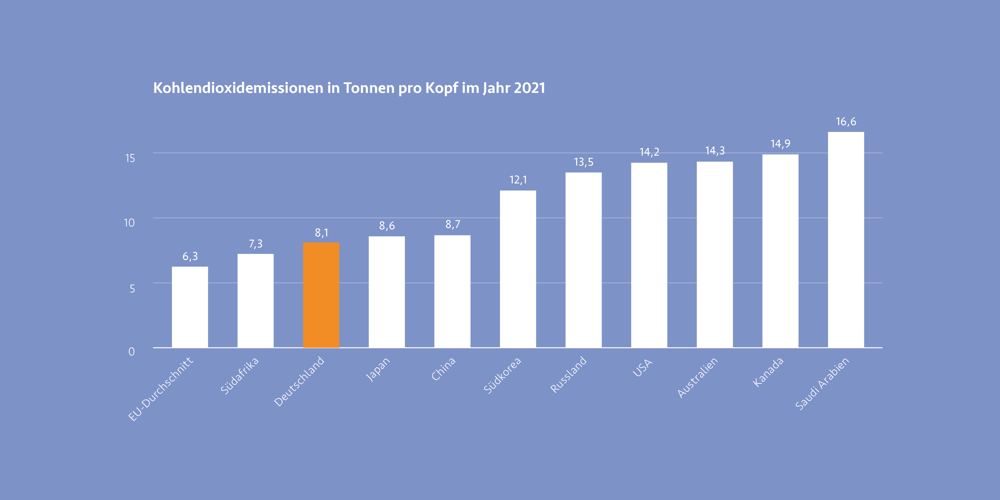

Krise ist nicht gleich Krise. Jede Krisensituation ist unterschiedlich und kann durch viele Punkte differenziert werden. Auch die Dauer der Krise kann ausschlaggebend über eine Einordnung sein. Zählen Starkregen, Sturmfluten und Erdrutsche zu kurzen, punktuellen Krisen, kann man den menschengemachten Klimawandel zur langanhaltenden Bedrohung zählen, die über einen längeren Zeitraum Menschenleben und Existenzen bedroht. Auch Kriege und daraus resultierende Fluchtbewegungen sind durch ihre Dauer differenzierter zu betrachten.
Klimawandel – Brandbeschleuniger für Krisen
Überflutungen in Afrika, Hitzewellen in Amerika und Asien, Flächenbrände in Australien und Kanada und Extremwetter weltweit. Allein die vergangenen Jahre zeichnen ein dramatisches Bild der Auswirkungen der Klimakrise. Sie vernichtet Lebensgrundlagen, gefährdet Menschenleben und schürt Konflikte über knappe Ressourcen, oft in Regionen in denen das Leben ohnehin schon herausfordernd sein kann. Für Millionen von Menschen bedrohen diese Auswirkungen ihre Existenz und ihren Lebensraum. Beim Thema des menschengemachten Klimawandel geht es nicht nur um ein Umweltphänomen, sondern um die Bedrohung für Frieden und Sicherheit in der Welt. 1
Seit Beginn des 21. Jahrhunderts, haben sich die Treibhausgasemissionen in der Atmosphäre, durch den Anstieg der ausgestoßenen CO2-Emissionen deutlich erhöht. Einen signifikanten Einfluss haben dabei Schwellen- und Industrieländer. 2 So waren etwa die G20-Staaten im Jahr 2021 für 81% der ausgestoßenen CO2-Emissionen verantwortlich. Das entspricht einem Wert von 38 Milliarden Tonnen. Gemessen an den Einwohner:innen hat Saudi-Arabien mit 16,6 Tonnen den höchsten Pro-Kopf Ausstoß. Danach folgen Kanada, Australien, die USA und Russland. Deutschland landet mit 8,1 Tonnen pro Kopf auf Platz 9 des weltweiten Rankings. 3
 4
Menschen aus Ländern im globalen Süden sind am stärksten von den direkten Auswirkungen des Klimawandels betroffen. Die steigenden Temperaturen, die von den Treibhausgasen in der Atmosphäre befeuert werden, haben Einfluss auf das Wetter und können Wetterextreme hervorrufen, welche Naturkatastrophen zur Folge haben können.
Überschwemmungen und Starkregen hängen von mehreren Faktoren ab. Durch das Schmelzen der Gletscher und Eisvorkommen auf der Erde, in Folge der erhöhten Temperatur, kommt es zu einem Anstieg des Meeresspiegels, wobei gerade tiefliegenden Inselstaaten Lebensgrundlagen genommen werden. Außerdem verdunstet durch die erwärmte Atmosphäre deutlich mehr Wasser aus den Weltmeeren und sammelt sich in gewaltigen Wolken, die längeren und stärkeren Regen zur Folge haben können. Besonders heikel wird es, wenn die Böden, auf die der Starkregen trifft, ohnehin ausgetrocknet sind. Der trockene Boden kann die hohe Niederschlagsmenge nicht aufnehmen und oft sind Erdrutsche oder Flutkatastrophen die Folgen. 5 Auch die Intensität und Schäden in Folge von Hurrikans und Tropenstürmen dürften sich durch die wärmeren Meere, im vergleich zu den vergangenen Jahrzehnten, verstärken. Angesichts des Ausbleiben von Niederschlägen erhöht sich zudem die Wahrscheinlichkeit für Trockenheit. Es folgen Dürren und Waldbrände, die gerade in ärmeren oder ohnehin schon sehr heißen Regionen der Erde Hungersnöte und Krankheiten auslösen können.
Naturkatastrophen in Folge des Klimawandels zerstören oft ganze Lebensgrundlagen. Durch Dürren, Überschwemmungen und Stürme, kommt es häufig zu Ernteausfällen. Die Bevölkerung kann den Bedarf an Lebensmitteln nicht mehr gewährleisten und ist auf Humanitäre Hilfe angewiesen. Die Versorgung in abgelegene Gebiete ist allerdings schwierig und dauert lange. Eine Fluchtbewegung der Bevölkerung kann die Folge sein. 6
Eine weitere Folge, durch die Zerstörung von klimawichtigen Regenwäldern und Mooren, ist die Verbreitung von Zoonosen. Infolge durch Eindringen und Verdrängen in die bis dahin noch unberührte Natur, werden viele Tiere aus ihrem gewohnten Umfeld vertrieben und müssen in fremde oder unübliche Gebiete ausweichen. Häufig kommen Menschen so in Kontakt mit Tieren, die Krankheitserreger übertragen, gegen die der Mensch nicht immun ist. Man spricht von Epidemien. Beispiele aus der näheren Vergangenheit sind SARS-CoV-2 oder Affenpocken aber auch Ebola, AIDS, Tollwut oder die Vogelgrippe zählen dazu.
Eine Studie aus dem Jahr 2012 geht davon aus, dass pro Jahr etwa 2,7 Millionen Todesfälle auf Zoonosen zurückzuführen sind. Die umgangssprachlich als Coronavirus bekannte Virusinfektion wurde sehr wahrscheinlich von Fledermäusen auf den Menschen übertragen. 7 Bis zum Ende des Jahres 2022 hatte das Coronavirus weltweit bereits knapp 6,7 Millionen nachgewiesene Todesfälle im Zusammenhang mit der Krankheit. 8
Den Klimawandel merken wir in unserem Alltag kaum, jedoch sind dessen Auswirkungen und Folgen die wohl größte Bedrohung und Existenzgefährdung, die es in der Menschheitsgeschichte je gab. Durch die Folgen des Klimawandels sind Millionen Menschen bedroht, was zu immer mehr Fluchtbewegungen und Migration bei immer kleiner werdenden Lebensräumen führt. Sollte die Reduzierung der Emissionen in den kommenden Jahrzehnten nicht deutlich eingedämmt werden, führt der Zustand unwiderruflich zur größten ökologischen und humanitären Krise der Welt. Diese kann Auslöser für weitere Krisen und Katastrophen wie Sturmfluten, Starkregen, Erdrutsche und Überschwemmungen sein wird.
-
Vgl. Auswärtiges Amt: Klimawandel – die größte Sicherheitsbedrohung unserer Zeit, 2024, https://www.auswaertiges-amt.de/de/aussenpolitik/klimaaussenpolitik/klimasicherheit/ 2179664 ↩︎
-
Vgl. European Comission: EDGAR - Emissions Database for Global Atmospheric Research, 2022, https://edgar.jrc.ec.europa.eu/report_2022#emissions_table ↩︎
-
Vgl. Statistisches Bundesamt: Treibhausgase der G20, 2022, https://www.destatis.de/ DE/Themen/Laender-Regionen/Internationales/Thema/umwelt-energie/umwelt/ G20_CO2.html ↩︎
-
Abb.: Emissionen Ranking weltweit https://www.destatis.de/DE/Themen/Laender-Regionen/Internationales/ Thema/umwelt-energie/umwelt/G20_CO2.html ↩︎
-
Vgl. Welthungerhilfe: Naturkatastrophen und der Klimawandel, https://www.welthungerhilfe. de/informieren/themen/klimawandel/naturkatastrophen ↩︎
-
Vgl. Welthungerhilfe: Naturkatastrophen und der Klimawandel, https://www.welthungerhilfe. de/informieren/themen/klimawandel/naturkatastrophen ↩︎
-
Vgl. Institut für Virologie Charité: Drei aus Fünf, 2020, https://www.zoonosen.net/ forschungsnetz/newsletter/07_2020/Artikel2 ↩︎
-
Vgl. Statista: Weltweite Zahl der Todesfälle in Zusammenhang mit dem Coronavirus (COVID-19) seit Februar2020, 2024, https://de.statista.com/statistik/daten/studie/ 1103240/umfrage/entwicklung-der-weltweitentodesfaelle-aufgrund-des-coronavirus/ ↩︎